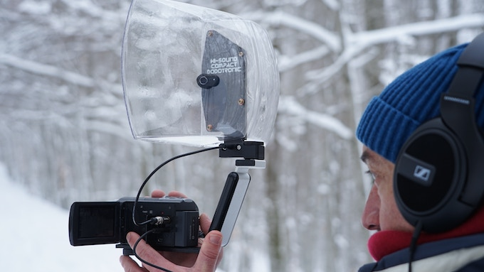
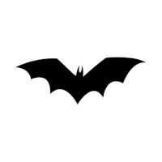
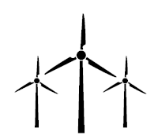

About
Dodotronic S.r.l. was founded with the aim to provide tools to hear the inaudible world. Our mission is to research new and innovative ways to approach audio recording, both of Audio and Ultrasound – on earth just as much as in water.

Fields of Interest
Our research is mainly focused on hardware and software development for various applications:
Soundscape, bird and mammal audio listening

Ultrasound recordings

Industrial predictive monitoring